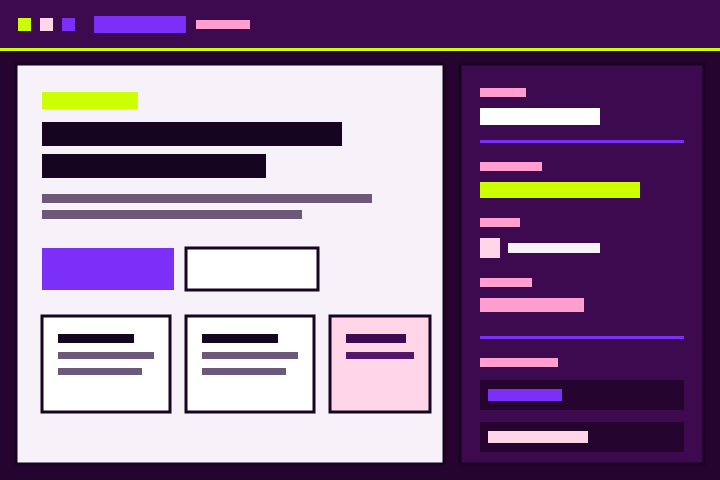
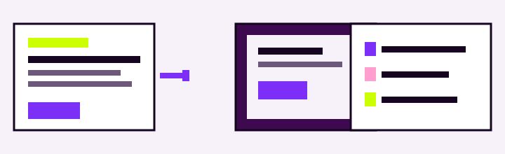

1
Someone writes files
You, or an agent following the site prompt: one folder, named classes, one stylesheet, brand tokens in :root.
Local editor for static sites
werkstatt opens a folder of plain HTML and CSS. Click an element, edit its class, save the same files an agent wrote — no build, no lock-in, nothing hiding behind a canvas.

01
An agent can write a whole site. You still want to change a word, a margin, an accent — without sending that one-letter request back.
1
You, or an agent following the site prompt: one folder, named classes, one stylesheet, brand tokens in :root.
2
Click, tweak, preview. Edit mode leaves scripts off so the page stays still. Preview runs them.
3
Save writes the same HTML and CSS. Hand the folder back. Nothing was trapped in a proprietary canvas.

02
The right panel talks in the language of the stylesheet. Not a parallel design file — the real rules.
Classes
Select an element and edit the class that paints it. Rename once, and every page that shares the name follows.
Tokens
Colors, type, rhythm and radius live in :root. Change --violet and the whole site shifts with it.
States
Menus, tabs and theme overrides are classes and attributes you can see. Style the open state without running the script.
03
“The site you save should still be the site you can read. Nesting, layers, odd selectors — they have to survive the round trip.”
— the contract this editor keeps
This site is the showcase, the tutorial, and the lab. Use it to learn the loop — and to develop the app against a page that actually looks like a site.
Go to Learn